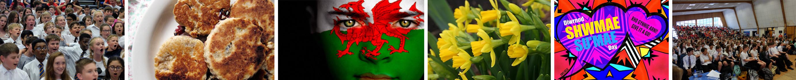

The Welsh department is a successful, enthusiastic and hardworking department of five teachers – with some of them having learnt Welsh themselves at school.
Mae’r adran Gymraeg yn adran llwyddiannus, brwd a gweithgar sy’n cynnwys pump o athrawon – rhai ohonynt wedi dysgu Cymraeg eu hun yn yr ysgol.
Welsh is taught as a second language only in this school and the department’s ultimate aim is to produce young people who can communicate through the medium of Welsh.
Fel ail iaith yn unig, y dysgir y Gymraeg yn yr ysgol hon, ac amcan yr adran ydy cynhyrchu pobl ifanc fydd yn medru cyfathrebu trwy gyfrwng y Gymraeg yn y pen draw.
With all the exciting developments in Wales today, people are becoming more and more aware of the importance of the language. It can be of an enormous advantage in a wide range of careers and jobs.
Gyda’r holl ddatblygiadau cynhyrfus yn y byd Cymraeg heddiw – mae pobl yn dod yn fwy ymwybodol o bwysigrwydd yr iaith. Gall fod o fantais aruthrol mewn amrywiaeth helaeth o yrfaoedd a swyddi.
We attempt to nurture our pupils’ positive attitudes towards their language and culture through dynamic teaching and also by arranging a variety of extra curricular activities to promote the language outside the classroom.
Ceisiwn feithrin agweddau positif tuag at gymreictod trwy ddysgu dynamig ar lawr y dosbarth a hefyd trefnu gweithgareddau allgyrsiol i hybu’r iaith.
Our year 7 pupils celebrate our annual Eisteddfod, for more information please click the image below:
The department, at present teach the following examination specifications:
GCSE AS/A2If you require further information, please contact Miss J Stagg, Departmental Leader.